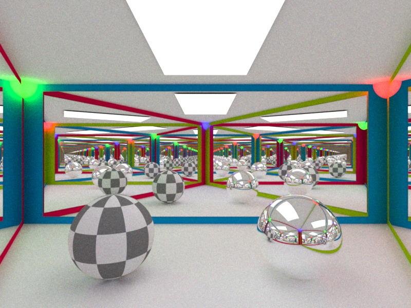
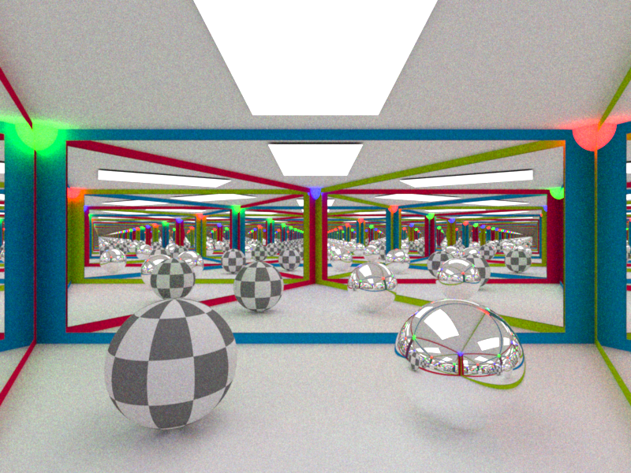
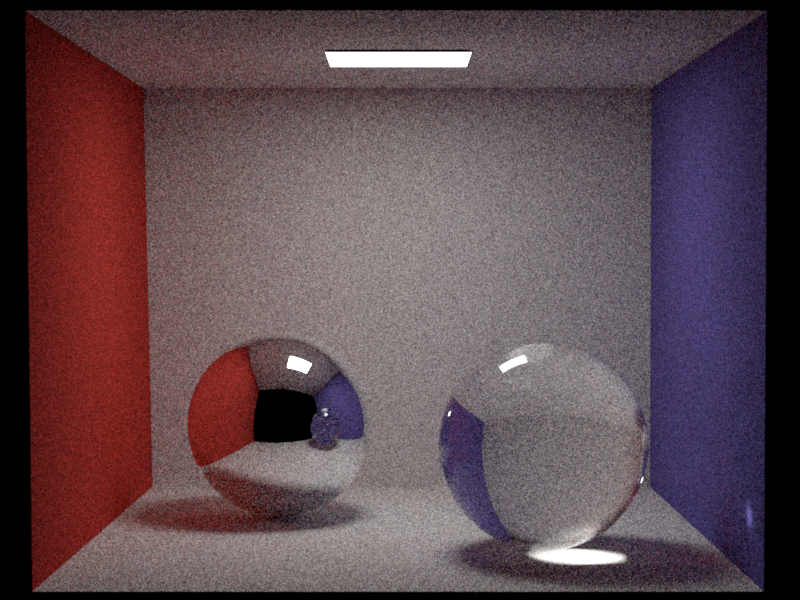
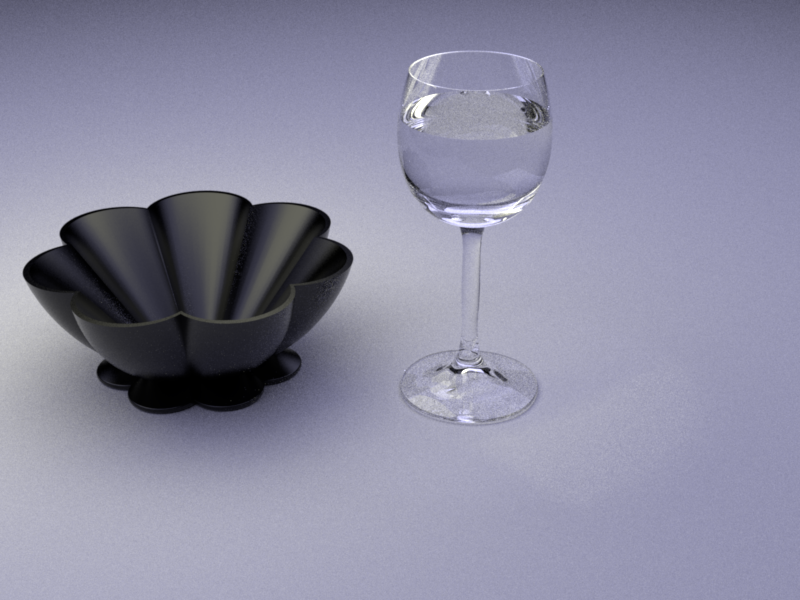
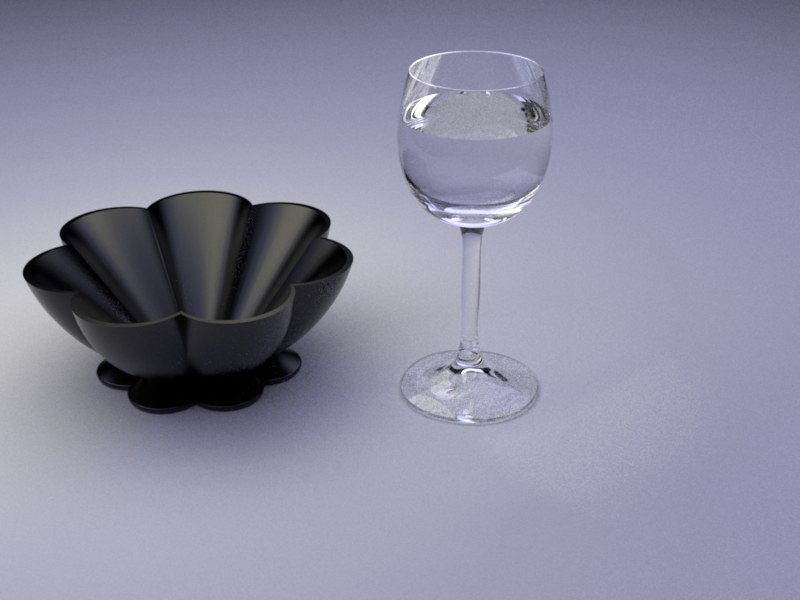
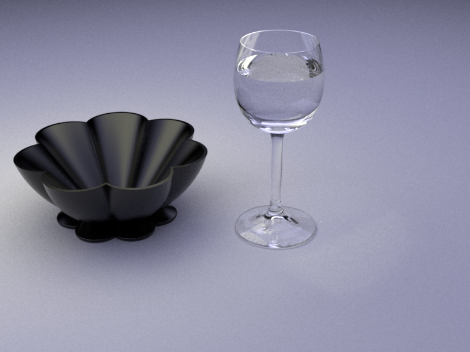
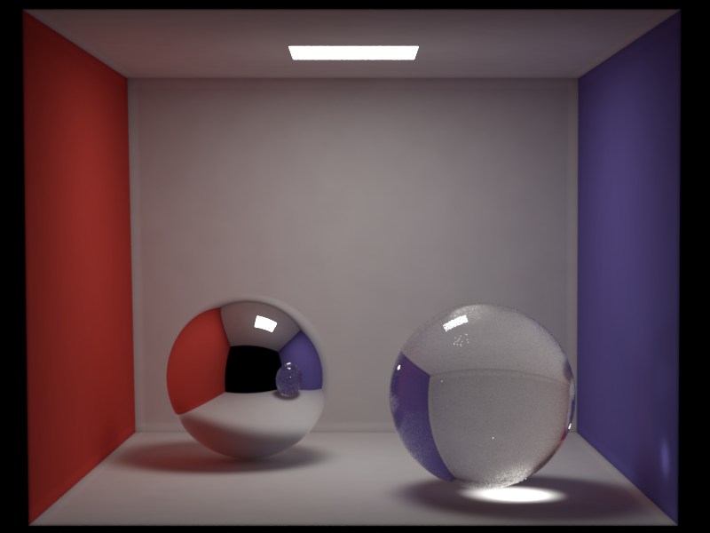
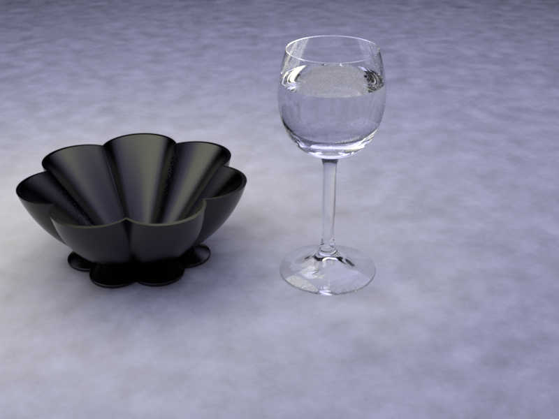
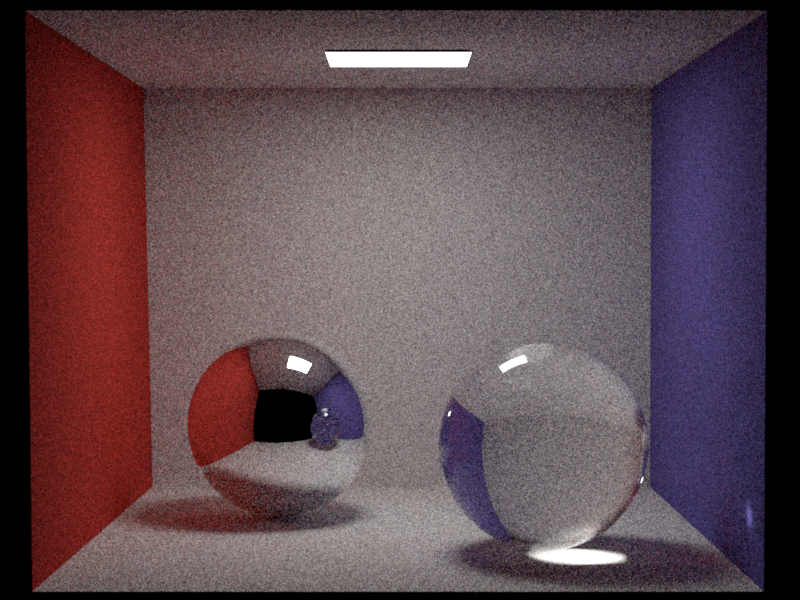
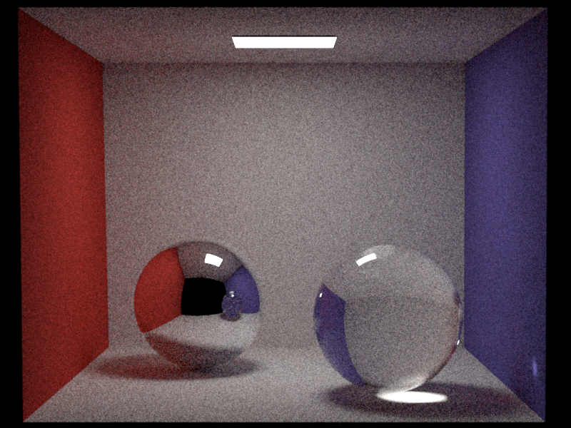

**Homework 4 - Global Illumination**
Student Name: Zehang Qiu
Legi Number: 22-739-809
(Note: please read the [supplementary](#supplementary) section first before working on this report.)
# Part 1: Dielectric BSDF
**Time spent on this task:**
~2 hour
**Describe your implementation of `Dielectric` class.**
My implementation mainly follows the requirements outlined in the guideline, handling two cases:
reflection and refraction. For the reflection part, it shares the same implementation goal as
mirror.cpp, so I directly used the code from mirror.cpp. As for the refraction part, I implemented
it by referencing the code in mirror.cpp and the Specular_Reflection_and_Transmission section in
pbrtv3. The values and judgments for etaI and etaT are derived from the implementation of the
fresnel function in common.cpp. I hesitated about the value to be returned. Initially, I thought
it should return the entire value of the fr function. However, after referencing the Q&A in
issue 65 and noticing that mirror returns Color3f(1.f), I understood that what should be returned
here is actually the radiometric quantities or power. Through testing, I confirmed that this
return value is correct.
**Test Result:** Passed 24/24 tests.
# Part 2: Path Tracing
## BSDF Sampling
**Time spent on this task:**
~1 hour
**Describe your implementation of `path_mats`.**
The implementation of path_mats is indeed an evolution of direct_mats.
Building upon direct_mats, I roughly determined each step based on the
pseudocode provided in the exercise slide. TraceRay is called within a loop,
so during the initialization phase, the original Ray is assigned to it.
The check for hitting the emitter is retained.
The Russian Roulette decision-making process follows.
In terms of the bsdf section, the original shadowray framework and judgment functions is removed,
opting instead to multiply the radiance result onto t for the next loop's assessment.
## Multiple Importance Sampling
**Time spent on this task:**
~2 hour
**Describe your implementation of `path_mis`.**
The implementation of path_Mis is indeed a combination of code from direct_mis and path_mats.
Most of the structural changes align with the modifications made in path_mats as mentioned earlier.
For the Light Sampling part, I largely retained the code from direct_mis. In the BSDF section, I
observed that the shadowRay used and the traceray needed to be constructed for the next loop were
the same. Since the traceray was not used afterward, I directly replaced the original shadowRay
construction with the update from traceRay. Calculations for pdf and w_mat were retained and the
color assigning part is removed.
After implementing this, I noticed that some specular reflections on glass spheres and focusing
effects on the ground were missing in the scene. Revisiting the exercise slides, I found that when
dealing with delta bsdf, manual assignment of MIS weights is required. I performed this operation
by adding the condition `bRec.measure == EDiscrete`.
It's worth mentioning that, for the Light Sampling part, initially, I intended to use
float ems_pdf_em = light->pdf(lRec) * (1/light_num)
based on the discussion in forum issue81. However, upon observing the results,
the generated light was darker. Consequently, I reverted to
float ems_pdf_em = light->pdf(lRec).
## Validation
**Comparison: CGL Triangle**


**Comparison: Cornell Box**

**Comparison: Table**



# Part 3: Photon Mapping
**Time spent on this task:**
~4 hours
## Photon Emission from Shape Area Lights
**Describe your implementation of `AreaEmitter::samplePhoton(...)`.**
I indeed implemented the following instruction: "first, uniformly choose a
location on the surface and then choose a cosine-weighted random direction over
the hemisphere around the surface normal. The power of the photon is π⋅A⋅L_e,
where L_e is the emitted radiance, and A is the total surface area of the shape
light."
Initially, my implementation only involved choosing a cosine-weighted random
direction. However, I noticed that the rendered results were peculiar. Given
my previous experience with similar situations in previous assignments and
the fact that the obtained values did not utilize the surface normal, I
speculated that it might be related to the coordinate system.
Regarding the surface area, I initially attempted to find relevant functions
using '->', and the only related one was pdfSurface. Based on the understanding
that pdf equals 1/area, I calculated the surface area as 1/pdf.
## Photon Tracing and Storage
**Describe your implementation of `PhotonMapper::preprocess(...)`.**
The implementation of preprocessing is indeed similar to path_mat, with
the difference lying in the conditional check for intersection with the light
source. Instead of checking if it's the light source, it checks if it's a
diffuse surface, and the depositPhoton function takes place as well.
At the outermost loop, I initially used a for loop, but considering the
break parts and the continued execution of the function after push_back,
I opted for a while loop to ensure the total number of photons.
In other parts, the variable W replaces t from path_mat.
## Rendering/Radiance Estimation
**Describe your implementation of `PhotonMapper::Li(...)`.**
The implementation of Li is essentially similar to path_mat and preprocessing,
with the main difference lying in the photonDensityEstimation section. This part
follows the guidance, stating that "The photon density estimation consists of
querying all nearby photons from the photon map, summing the product of each photon's
power and the BSDF value given the photon's direction, and then dividing by the
product of the area in which photons were queried from (i.e. πr^2 where r is the
photon radius) and the total amount of photons emitted in the preprocessing step."
There's a humorous incident where, during the invocation of the search function,
I momentarily forgot to replace Point3f(0, 0, 0). This oversight led to an extended
period of debugging without identifying where the error is.
**ISSUE:**
Until the code submission, I noticed that my cbox_pmap scene and cgltri_pmap scene
appeared significantly darker compared to the reference scene, despite seemingly
having no other apparent errors. Currently, I am unclear about the cause of this
situation.
I speculate that it might not be related to preprocessing, as the number
of photons should be sufficient. Although I used getRandomEmitter in preprocessing,
I subsequently multiplied light_num back into W, just as a similar operation was
performed in the earlier implementation.
I am currently investigating to identify any other issues that might be causing this phenomenon.
**Update:**
The aforementioned issue has been resolved, and, in fact, the problem lay precisely in the
preprocessing part. Thanks to Tynan Richards for mentioning "photons are not surviving this
first bounce" in issues75 and plukovic for mentioning "generate arround 12mil(10 mil) photon
for cbox scene and around 9mil(5 mil) for table scene".
I revisited the concept of the photon map and realized that my previous approach recorded segments
of m_photonCount photon paths (between two bounces), rather than m_photonCount complete photon paths
(considering the entire bounce process). In the previous case, exactly 10mil photon is generated for
cbox sxene and 5 mil for table scene. By changing the position of the control loop iteration
statement(from in `if (isDiffuseSurface(x_i))` to `tracePhoton()` ), I achieved the desired bright results.
In this case, maybe keep using for function, not while, could have help me avoid the problem.
## Validation
**Comparison: CGL Triangle**
**Comparison: Cornell Box**

**Comparison: Table**

**Comparison: Clock**
# Feedback
**Use this section to provide feedback about this assignment (each task, the handout, Nori, etc.). We appreciate your opinions to help improve future homeworks and projects.**
This assignment provided more explicit and comprehensive guidance, making it easier for me to
quickly determine the direction of my thoughts. The overall experience of the process was quite
positive. Compared to previous assignments, there were not as many test cases covered this time,
which may require more exploration to ensure that the implemented code meets the requirements.
**I would like to emphasize my gratitude to the classmates and TAs who generously shared their
insights in the issues section, helping me overcome lots of code debugging challenges.**
# Supplementary
* For each task, please note down the time you spent working through it and use at least a few sentences to describe your implementation. If applicable, also report the problems you encounter (e.g. whether or how it's solved, what is the difficult part).
* Please let us know to what extent your code is working (e.g. you only managed to work through part of this assignment, or your solution doesn't operate as expected in some corner cases). We encourage you to share your thinking process, and points will be granted based on your description even if the code is not 100% functioning.
* Nori generates both EXR and PNG format output. Please use PNG for image comparison in the report.
* This report template uses [Markdeep](https://casual-effects.com/markdeep/), which supports Markdown syntax in HTML file. For example usage, please refer to the [official demo document](https://casual-effects.com/markdeep/features.md.html).
* LaTeX is also supported for typing mathematical formulas:
$$
L_o(\mathbf{x}, \omega_o) = \int_{\Omega} L_i(\mathbf{x},\omega_i)\, f(\mathbf{x}, \omega_i, \omega_o)\, |\cos\theta_i|\, \mathrm{d}\omega_i
$$
 
